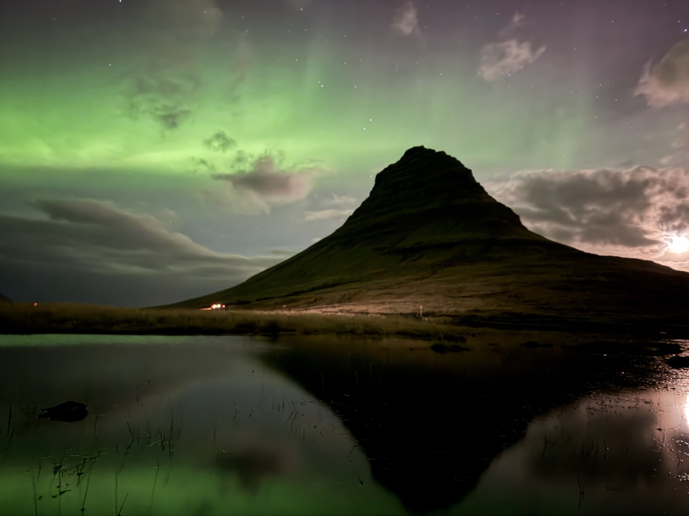

The Mountain of Legends
KIRKJUFELL · SNÆFELLSNES PENINSULA · ICELAND
En un país moldeado por el fuego, el hielo y las fuerzas más poderosas de la naturaleza, pocos lugares son tan reconocibles como Kirkjufell. Elevándose sobre la costa norte de la península de Snæfellsnes, en Islandia, esta montaña de formas extraordinarias se ha convertido en uno de los lugares más fotografiados del país y en uno de los grandes símbolos de la propia Islandia.
Su silueta inconfundible domina el paisaje que la rodea, apareciendo aislada entre el océano, los campos de lava y los glaciares lejanos. Aunque no se encuentra entre las montañas más altas de Islandia, Kirkjufell posee una combinación excepcional de belleza, simetría y carácter geológico que ha fascinado a fotógrafos, viajeros y narradores de todo el mundo.
Durante mi viaje por el oeste de Islandia tuve la oportunidad de contemplar Kirkjufell bajo dos estados de ánimo completamente diferentes. El primero, bajo la luz suave de un día cubierto, reflejándose perfectamente sobre aguas tranquilas. El segundo, durante la noche ártica, iluminada por uno de los mayores espectáculos de la naturaleza: las auroras boreales.

La montaña iglesia
El nombre Kirkjufell significa literalmente «Montaña Iglesia», una referencia a su forma característica, que recuerda al campanario de una iglesia elevándose sobre el paisaje. Situada cerca del pequeño pueblo pesquero de Grundarfjörður, la montaña alcanza los 463 metros de altura y domina la costa de la península de Snæfellsnes.
Su posición aislada aumenta todavía más su impacto visual. A diferencia de las grandes cordilleras donde las cumbres compiten por atraer la mirada, Kirkjufell aparece casi completamente sola, emergiendo del paisaje con una simetría extraordinaria. Esta silueta única le ha otorgado la fama de ser uno de los grandes iconos naturales de Islandia.
Durante siglos, los pescadores que navegaban por las aguas del oeste de Islandia utilizaron la montaña como punto de referencia. Hoy, fotógrafos llegados de todos los rincones del planeta viajan hasta aquí buscando capturar su perfil inconfundible bajo cielos siempre cambiantes.
La tierra del fuego y el hielo
Para comprender Kirkjufell, primero hay que comprender Islandia.
La isla se encuentra directamente sobre la dorsal mesoatlántica, un límite geológico donde las placas tectónicas Norteamericana y Euroasiática se separan lentamente. Esta ubicación excepcional convierte a Islandia en una de las regiones volcánicamente más activas de la Tierra y ha dado forma a sus paisajes durante millones de años.
Las erupciones volcánicas, la actividad tectónica y la acción de los glaciares han trabajado conjuntamente para crear un territorio único en Europa. Los campos de lava se extienden por enormes áreas del país, mientras los glaciares excavan valles, fiordos y montañas con formas extraordinarias.
La propia Kirkjufell es el resultado de estos grandes procesos geológicos. Durante las eras glaciares, el movimiento del hielo fue esculpiendo lentamente el terreno que la rodea, creando las pendientes pronunciadas y la estructura estratificada que define la montaña actual. Su apariencia no es solo bella, sino también un testimonio de la historia geológica de Islandia.
La península de Snæfellsnes
Conocida a menudo como «Islandia en miniatura», la península de Snæfellsnes reúne muchos de los paisajes más característicos del país en una extensión relativamente pequeña.
Los visitantes encuentran aquí cráteres volcánicos, playas de arena negra, campos de lava, acantilados espectaculares y pequeños pueblos pesqueros repartidos por la costa. La península también alberga el Snæfellsjökull, un volcán cubierto por un glaciar que inspiró la famosa novela de Julio Verne Viaje al centro de la Tierra.
Gracias a esta extraordinaria diversidad, la región está considerada uno de los mejores lugares para comprender la identidad geológica y cultural de Islandia.
Trolls, leyendas y mundos ocultos
Como muchos de los lugares más extraordinarios de Islandia, Kirkjufell está rodeada de historias y leyendas.
Durante siglos, las tradiciones islandesas han hablado de trolls, seres ocultos y criaturas sobrenaturales que habitan montañas, campos de lava y valles remotos. Estos paisajes dramáticos inspiraron innumerables relatos que intentaban explicar los misterios de la naturaleza mucho antes de que la ciencia moderna llegara.
Una montaña tan singular como Kirkjufell estaba destinada a formar parte de esta tradición. Elevándose sola contra el cielo, posee una presencia casi mítica. Aunque estas historias pertenecen al folclore y no a la historia documentada, siguen profundamente conectadas con la cultura islandesa y continúan influyendo en la forma en que muchas personas experimentan estos paisajes.
Incluso hoy, la idea de que algo antiguo e invisible permanece más allá del mundo que podemos ver parece extrañamente creíble entre la inmensidad volcánica de Islandia.
{kind=link}

Bajo las auroras boreales
Si Kirkjufell resulta impresionante durante el día, se convierte en algo verdaderamente inolvidable después del atardecer.
Durante las largas noches árticas de otoño e invierno, Islandia ofrece algunas de las mejores oportunidades del planeta para contemplar la aurora boreal. Estas cortinas de luz en movimiento se producen cuando partículas cargadas procedentes del Sol chocan con los gases de la atmósfera superior terrestre, creando ondas de color que atraviesan el cielo nocturno.
En noches despejadas, el cielo sobre Kirkjufell se transforma en un auténtico escenario de luz y movimiento. Cintas verdes flotan sobre la montaña mientras la silueta permanece completamente inmóvil bajo ellas, creando un contraste extraordinario entre movimiento y silencio.
Fotografiar una aurora requiere paciencia. Las condiciones pueden cambiar rápidamente, las nubes pueden aparecer sin previo aviso y las luces pueden permanecer ocultas durante horas. Pero cuando todos los elementos coinciden, el resultado parece casi irreal.
De pie junto al agua mientras la aurora se reflejaba en la superficie, Kirkjufell parecía menos una montaña y más una silueta que conectaba el cielo con la tierra.
Un icono para los fotógrafos
Pocos lugares están tan asociados a la fotografía islandesa como Kirkjufell.
Su forma perfecta, su fácil acceso y su meteorología cambiante crean infinitas posibilidades fotográficas. Los fotógrafos regresan durante todo el año para capturar la montaña bajo todas sus estaciones.
En verano, la suave luz ártica ilumina las laderas verdes bajo cielos interminables. Durante el otoño, las tormentas crean contrastes dramáticos y atmósferas cargadas de misterio. El invierno transforma el paisaje en un mundo de nieve, hielo y auroras. Cada visita revela una versión diferente de la misma montaña.
Esta capacidad de reinventarse constantemente es una de las razones por las que Kirkjufell continúa siendo un motivo fotográfico tan eterno.
La montaña de las leyendas
Lo que hace verdaderamente extraordinaria a Kirkjufell no es su altura ni su dificultad técnica.
Es la manera en que concentra la esencia misma de Islandia.
Volcanes bajo la superficie.
Glaciares que dieron forma al territorio.
Leyendas transmitidas durante generaciones.
Climas árticos que cambian en cuestión de minutos.
Y auroras boreales danzando sobre el cielo.
Juntos, todos estos elementos crean un paisaje que parece detenido en el tiempo.
Durante el día, Kirkjufell se alza como uno de los monumentos naturales más reconocibles de Islandia. Durante la noche, bajo el resplandor de la aurora, se transforma en algo todavía más extraordinario.
Para los viajeros es un destino. Para los fotógrafos es un sueño. Y para cualquiera que tenga la fortuna de contemplarla bajo el cielo ártico, se convierte en un recuerdo imposible de olvidar.
Ficha fotográfica
Ubicación: Kirkjufell, península de Snæfellsnes, Islandia
Altitud: 463 m
Pueblo cercano: Grundarfjörður
Categoría: Fotografía de paisaje
Tema: Kirkjufell y las auroras boreales
Fotógrafo: Carles Torres